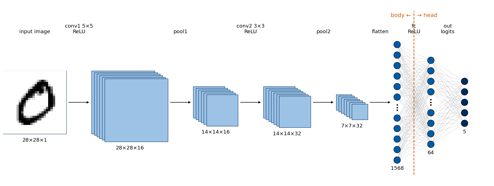
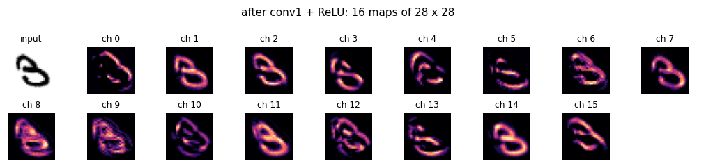
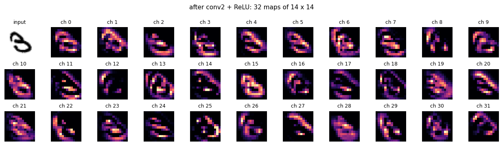
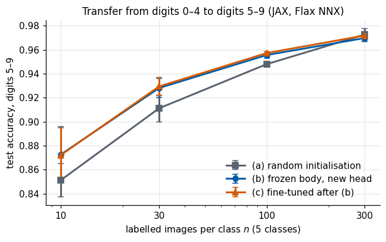
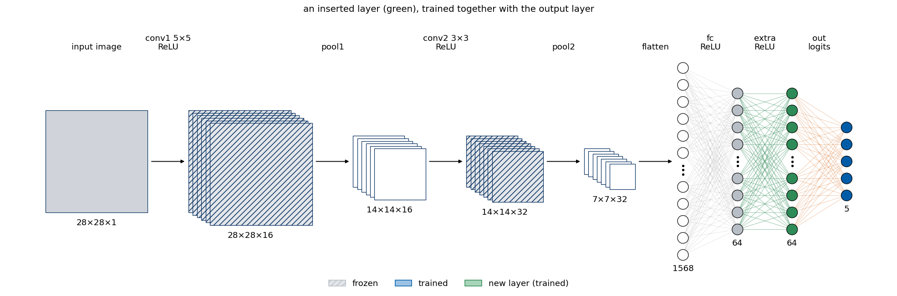
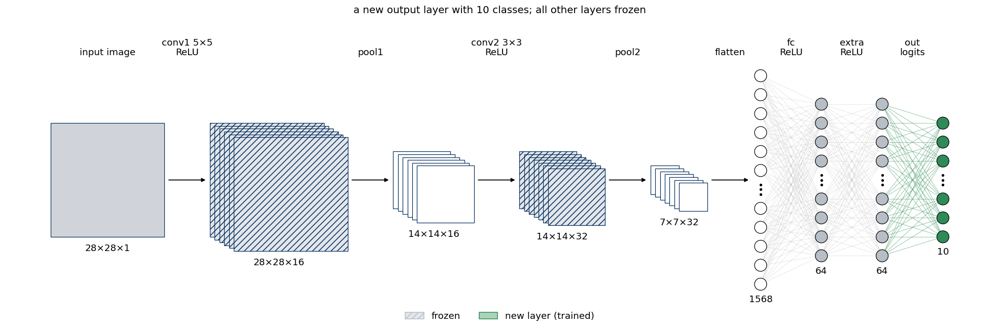

Training a network is rarely the last step. A trained network is a set of arrays (the parameters) together with a description of the computation (the architecture), and most of the daily work consists of doing things with it: storing it, reloading it, looking at what it has learned, cutting it into pieces, adding layers, and re-using it for a new problem. This lab is the toolbox for these operations.
We train one small convolutional neural network (CNN) on the handwritten digits 0–4 of MNIST and then use it in every section. Section 1 trains the CNN once, writes its parameters to disk, loads them into a fresh model, and checks that the predictions are identical. Section 2 inspects the trained model: its layers, parameter shapes and counts, access to single weights, and the distinction between trainable and frozen parameters. Section 3 looks inside the network, at the first-layer kernels drawn as images and at the feature maps of one digit after each convolutional layer, obtained as intermediate outputs. Section 4 performs model surgery: it cuts the network into a feature extractor, attaches a new head, inserts a layer and replaces a layer. Section 5 uses these tools for transfer learning on a new task, the digits 5–9 with few labelled images, comparing a random initialisation, a frozen trained body with a new head, and fine-tuning of all parameters. Section 6 lists every operation of the lab in PyTorch and in JAX/Flax side by side.
The twin notebook Lab 003a does exactly the same in PyTorch: same data, same architecture, same sections, same printed quantities. The two can be read side by side.
We use three libraries: JAX (arrays, automatic differentiation, compilation), Flax NNX (flax.nnx, neural-network layers as Python objects) and optax (optimisers). The network is a convolutional neural network (CNN): its first layers slide small learned filters over the image, so the same pattern detector is applied everywhere. Its activation function is the rectified linear unit, \(\mathrm{ReLU}(z)=\max(0,z)\), and it is trained with Adam (adaptive moment estimation), a gradient-descent optimiser that adapts the step size of every parameter to the recent size of its gradients. JAX compiles the computations with XLA (Accelerated Linear Algebra), a compiler that fuses many array operations into one fast kernel; here everything runs on the central processing unit (CPU), and the same code runs on a graphics processing unit (GPU).
To run this notebook in Google Colab, follow these steps: 1. Go to https://colab.research.google.com → File → Upload notebook. The notebook runs on the CPU (the first code cell sets JAX_PLATFORMS=cpu); the model and the data sets are small enough to finish in a few minutes. 2. jax, flax, optax, orbax-checkpoint, numpy and matplotlib are pre-installed in Colab. 3. The notebook uses the four MNIST files (*-ubyte.gz); if they are missing, it downloads them. 4. Run the cells in order: later cells use variables defined earlier. If the state becomes inconsistent: Runtime → Restart session and run from the top.
Code
import osos.environ["JAX_PLATFORMS"] ="cpu"# run JAX on the CPU (set before importing jax)os.environ["CUDA_VISIBLE_DEVICES"] =""# hide all GPUsimport gzip, importlib.util, shutil, time, urllib.requestfrom functools import partialimport numpy as npimport matplotlib.pyplot as pltimport jax, jax.numpy as jnpimport optaximport flaxfrom flax import nnxfrom flax.traverse_util import flatten_dict, unflatten_dictUJBlue, UJNavy, DSOrange, UJGray ="#005CA7", "#002B5C", "#D35A05", "#5A6270"plt.rcParams.update({"figure.dpi": 110, "axes.spines.top": False, "axes.spines.right": False,"axes.titlesize": 11, "axes.labelsize": 10, "legend.frameon": False})def noframe(ax): # image panels: no ticks, no frame ax.set_xticks([]); ax.set_yticks([])for sp in ax.spines.values(): sp.set_visible(False)t_start = time.time()print("JAX", jax.__version__, "| flax", flax.__version__, "| optax", optax.__version__, "| devices:", jax.devices())
MNIST contains \(28\times28\) grayscale images of handwritten digits, \(60\,000\) for training and \(10\,000\) for testing. We split it into two tasks. The source task consists of the digits 0–4, with all training images of these digits; the CNN is trained on it in this section. The target task consists of the digits 5–9 and is used in Section 5. Its labels are shifted, \(5\to0,\dots,9\to4\), so both tasks have 5 classes.
The files are in the raw IDX format: a short big-endian header (a magic number, then the sizes), followed by one byte per pixel; we read them with gzip and numpy. Pixels are scaled to \([0,1]\).
Flax convolutions expect image arrays in the layout (N, H, W, C): batch size, height, width, channels (“channels last”). Our images are therefore stored as (N, 28, 28, 1). (PyTorch uses (N, C, H, W), see Lab 003a.) jnp.asarray copies the arrays once to the default device, here the CPU.
Code
MNIST_DIR ="data/MNIST_raw"MNIST_FILES = ["train-images-idx3-ubyte.gz", "train-labels-idx1-ubyte.gz","t10k-images-idx3-ubyte.gz", "t10k-labels-idx1-ubyte.gz"]ifnotall(os.path.exists(f"{MNIST_DIR}/{f}") for f in MNIST_FILES): os.makedirs(MNIST_DIR, exist_ok=True)for f in MNIST_FILES: urllib.request.urlretrieve(f"https://storage.googleapis.com/cvdf-datasets/mnist/{f}", f"{MNIST_DIR}/{f}")def read_idx(path):with gzip.open(path, "rb") as fh: data = fh.read() ndim = data[3] # 3 for images, 1 for labels shape = np.frombuffer(data[4:4+4* ndim], dtype=">i4") # big-endian int32 sizesreturn np.frombuffer(data[4+4* ndim:], dtype=np.uint8).reshape(shape)Xtr_all = read_idx(f"{MNIST_DIR}/{MNIST_FILES[0]}").astype(np.float32) /255.0# (60000, 28, 28)ytr_all = read_idx(f"{MNIST_DIR}/{MNIST_FILES[1]}").astype(np.int32)Xte_all = read_idx(f"{MNIST_DIR}/{MNIST_FILES[2]}").astype(np.float32) /255.0# (10000, 28, 28)yte_all = read_idx(f"{MNIST_DIR}/{MNIST_FILES[3]}").astype(np.int32)def task(X, y, digits):# images of the given digits as (N, 28, 28, 1) float32 and labels shifted to 0 .. len(digits)-1 keep = np.isin(y, digits)return jnp.asarray(X[keep][:, :, :, None]), jnp.asarray(y[keep] - digits[0])Xs_tr, ys_tr = task(Xtr_all, ytr_all, [0, 1, 2, 3, 4]) # source task: digits 0-4Xs_te, ys_te = task(Xte_all, yte_all, [0, 1, 2, 3, 4])Xt_pool, yt_pool = task(Xtr_all, ytr_all, [5, 6, 7, 8, 9]) # target task: labelled images are drawn from this pool in Section 5Xt_te, yt_te = task(Xte_all, yte_all, [5, 6, 7, 8, 9])assert Xs_tr.shape[1:] == (28, 28, 1) and Xs_tr.dtype == jnp.float32print("source task (digits 0-4): train", Xs_tr.shape, "| test", Xs_te.shape)print("target task (digits 5-9): pool ", Xt_pool.shape, "| test", Xt_te.shape)print("pixel range:", float(Xs_tr.min()), "to", float(Xs_tr.max()))
source task (digits 0-4): train (30596, 28, 28, 1) | test (5139, 28, 28, 1)
target task (digits 5-9): pool (29404, 28, 28, 1) | test (4861, 28, 28, 1)
pixel range: 0.0 to 1.0
1.2 The architecture: a convolutional body and a dense head
The network (conv–pool–conv–pool–dense–output) is split into two named parts, because Sections 4 and 5 treat them separately. The body (the convolutional feature extractor) maps an image to a feature vector of \(7\cdot7\cdot32=1568\) numbers, \[
(N,28,28,1)\xrightarrow{\text{conv }5\times5,\ 16}(N,28,28,16)\xrightarrow{\text{ReLU, max-pool }2}(N,14,14,16)\xrightarrow{\text{conv }3\times3,\ 32}(N,14,14,32)\xrightarrow{\text{ReLU, max-pool }2}(N,7,7,32)\xrightarrow{\text{flatten}}(N,1568).
\] The head (the classifier) is a dense layer with ReLU followed by an output layer, \((N,1568)\xrightarrow{\text{fc, ReLU}}(N,64)\xrightarrow{\text{out}}(N,5)\), giving 5 logits (unnormalised log-probabilities of the classes).
In Flax NNX a network is a Python class derived from nnx.Module: layers are created in __init__ and stored as attributes, and __call__ is the forward pass. The attribute names (body, conv1, …) become the parameter names (body/conv1/kernel). padding="SAME" keeps height and width unchanged, so only pooling halves them. Every layer with parameters receives rngs, an nnx.Rngs(seed) key generator: JAX has no hidden global random state, and a fixed seed fixes the initial parameters.
The pooling operations have no parameters; they are stored as attributes anyway (self.pool1 = partial(nnx.max_pool, ...), a function with fixed arguments) so that they can be replaced in Section 4.4, like the named pool1 layer of the PyTorch model.
A picture of the architecture helps to keep track of the shapes, and in Sections 4 and 5 it will also show which parts of the network are changed. A dense network can be drawn node by node, each node a circle and each weight a line (Lab 007), but for a convolutional layer such a drawing is not readable: conv1 alone produces \(16\cdot28\cdot28=12\,544\) numbers, each computed from a \(5\times5\) patch of the image with the same 25 weights of its kernel. Convolutional networks are therefore drawn as block diagrams in which every intermediate result is a stack of feature maps. The function draw_cnn draws \(C\) maps of \(H\times W\) pixels as overlapping squares whose side is proportional to \(H\) and whose number grows with \(\log_2 C\), and writes the shape \(H\times W\times C\) under the stack and the name of the layer that produced it above the arrow. Once the maps are flattened into a vector, the dense head is drawn with nodes and edges: every node a circle, every weight a line, and a wide layer with a limited number of circles, three dots for the omitted nodes and its true width under the column. A dashed line can mark the place where the network is cut into two parts, and an optional list status colours every layer as frozen, trained or new, which we use from Section 5 on.
The first cell contains the helpers for the columns of nodes: nodes_shown decides how many circles a layer of a given width gets (all of them up to max_nodes, then a number growing with the logarithm of the width), draw_layer draws one column, connect draws the lines of a dense layer between two columns, and finish sets equal scales on both axes and a figure size proportional to the drawing.
Code
import numpy as npimport matplotlib.pyplot as pltfrom matplotlib.patches import Circle, Rectanglefrom matplotlib.collections import LineCollectionSCALE =0.42# inches of figure per drawing unit; neighbouring nodes of a layer are 1 unit apartNODE_COLORS = {"input": "#8A929E", "hidden": "#005CA7", "latent": "#D35A05", "output": "#002B5C","cond": "#2E8B57", "noise": "#F2B28A"}def text_height(fontsize, lines=1):"""Height of `lines` lines of text of the given font size, in drawing units (used to place labels)."""return lines *1.25* fontsize /72/ SCALEdef nodes_shown(n, max_nodes=8, growth=1.5):"""Number of circles drawn for a layer of width n. Up to max_nodes every node is drawn. A wider layer gets max_nodes circles plus `growth` circles for every doubling of its width, so the column height still grows with the width: with the defaults a layer of 16 nodes is drawn with 10 circles, 64 with 12, 256 with 16 and 784 with 18."""if n <= max_nodes:return nreturn max_nodes +int(round(growth * np.log2(n / max_nodes)))def draw_layer(ax, x, n, y0=0.0, color=NODE_COLORS["hidden"], max_nodes=8, growth=1.5, r=0.32, top=None, bottom=None, show_width=True, fontsize=12):"""Draw one layer of width n as a vertical column of circles at horizontal position x, centred at height y0. Returns the heights of the drawn circles, from top to bottom (needed to draw the edges). The circles are 1 unit apart. If the layer is wider than the number of circles (see nodes_shown), one slot in the middle of the column stays empty and gets three dots, which stand for the omitted nodes; the true width n is then the number written under the column. `top` and `bottom` are optional texts above and below.""" k = nodes_shown(n, max_nodes, growth) capped = k < n slots = k +1if capped else k # one extra slot for the dots y = y0 + (slots -1) /2- np.arange(slots) # heights of the slots, from top to bottomif capped: mid = slots //2 ax.scatter([x] *3, y[mid] + np.array([-0.25, 0.0, 0.25]), s=6, color="k", zorder=3) y = np.delete(y, mid) # no circle in the dotted slotfor yi in y: ax.add_patch(Circle((x, yi), r, facecolor=color, edgecolor="k", lw=0.8, zorder=3)) under = (f"{n}"if show_width else"") + (f"\n{bottom}"if bottom else"")if under.strip(): ax.text(x, y0 - (slots -1) /2-0.55, under.strip("\n"), ha="center", va="top", fontsize=fontsize, linespacing=1.1)if top: ax.text(x, y0 + (slots -1) /2+0.55, top, ha="center", va="bottom", fontsize=fontsize, linespacing=1.1)return ydefconnect(ax, x0, y0, x1, y1, one_to_one=False, color="0.45", alpha=0.35, lw=0.6, ls="-"):"""Edges between two drawn layers at horizontal positions x0 and x1, whose circles are at heights y0 and y1. A dense layer joins every node to every node, one line per weight; an elementwise operation joins node j only to node j (one_to_one=True). The lines are thin and semi-transparent, and are drawn below the circles (zorder), so they seem to end at the circle boundaries.""" pairs =zip(y0, y1) if one_to_one else [(a, b) for a in y0 for b in y1] segments = [[(x0, a), (x1, b)] for a, b in pairs] ax.add_collection(LineCollection(segments, colors=color, alpha=alpha, linewidths=lw, linestyles=ls, zorder=1))def bracket(ax, x0, x1, y, text, color="k", fontsize=12):"""A horizontal bracket from x0 to x1 at height y with a text above it; it marks a block of layers.""" ax.plot([x0, x0, x1, x1], [y -0.3, y, y, y -0.3], color=color, lw=1.5) ax.text((x0 + x1) /2, y +0.2, text, ha="center", va="bottom", fontsize=fontsize, color=color)def finish(ax, title="", fontsize=12):"""Equal scales on both axes (circles stay round), no axes, and a figure size proportional to the drawing.""" ax.set_aspect("equal") ax.autoscale_view() ax.axis("off")if title: ax.set_title(title, fontsize=fontsize) (x0, x1), (y0, y1) = ax.get_xlim(), ax.get_ylim() ax.figure.set_size_inches(SCALE * (x1 - x0) +1.0, SCALE * (y1 - y0) +1.2)
draw_cnn goes through the list of stages from left to right. A stage is either a shape \((H, W, C)\), drawn as a stack of squares, or an integer \(n\), drawn as a column of \(n\) nodes; two consecutive vectors are joined by the edges of a dense layer, every other pair of stages by an arrow. The function smallcnn_stages writes down the stages of our SmallCNN once, so that the later drawings only change the colours.
Code
def draw_cnn(stages, cut=None, status=None, input_image=None, image_cmap="gray_r", map_height=6.0, shape_fmt="{H}×{W}×{C}", max_nodes=5, growth=0.75, gap=2.4, fontsize=12, title="", ax=None):"""Block diagram of a convolutional network: stacks of feature maps, followed by columns of nodes. stages : list of (shape, text) from the input to the output. shape = (H, W, C): C feature maps of H x W pixels, drawn as a stack of squares whose side is proportional to H and whose number grows with log2(C); "H×W×C" is written underneath. shape = n (an integer): a vector of n numbers, drawn as a column of nodes (draw_layer); two consecutive vectors are joined by the edges of a dense layer. text = the operation that produces this stage, written above the gap leading to it (for the first stage: the name of the input). cut : None or (i, left_name, right_name): a dashed line after stage i that splits the network into two named parts, e.g. (5, "body", "head") status : None, or one entry per stage saying how the parameters of the layer that PRODUCES this stage are treated: "frozen" (grey, hatched), "trained" (blue, orange edges), "new" (green: a new layer, trained) or None (a layer without parameters, e.g. pooling, drawn white); a legend is added input_image : optional 2D array shown in place of the first square (the input), with colour map image_cmap shape_fmt : format of the shape written under a stack, e.g. "{H}×{W}\n×{C}" for two lines map_height : height of the largest feature map in drawing units (the nodes of a column are 1 unit apart) """if ax isNone: fig, ax = plt.subplots() unit = map_height /max(s[0] for s, _ in stages ifnot np.isscalar(s)) # drawing units per pixel off =0.25# shift between neighbouring squares of a stack x, lefts, rights, tops, prev_vec =0.0, [], [], [], None# colours for the status of a layer: (map face, map hatch, node colour, edge colour, edge alpha) STYLE = {"frozen": ("#E3E6EA", "///", "#B8BEC6", "0.6", 0.25), "trained": ("#9CC3E6", None, NODE_COLORS["hidden"], NODE_COLORS["latent"], 0.35),"new": ("#A8D5B9", None, NODE_COLORS["cond"], NODE_COLORS["cond"], 0.55), None: ("#9CC3E6", None, None, "0.45", 0.35),"none": ("#FFFFFF", None, "#FFFFFF", "0.45", 0.35)} # "none": no parameters, drawn whitefor i, (shape, text) inenumerate(stages): state =Noneif status isNoneelse (status[i] or"none") # with a status list, layers without parameters are white face, hatch, node_c, edge_c, edge_a = STYLE[state]if np.isscalar(shape): # a vector: a column of nodes xc = x +0.4 color = node_c or (NODE_COLORS["output"] if i ==len(stages) -1else NODE_COLORS["hidden"]) yv = draw_layer(ax, xc, shape, color=color, max_nodes=max_nodes, growth=growth, fontsize=fontsize)if prev_vec isnotNone: # vector -> vector: the edges of a dense layerconnect(ax, prev_vec[0], prev_vec[1], xc, yv, color=edge_c, alpha=edge_a) prev_vec = (xc, yv) left, right, top = xc -0.4, xc +0.4, yv.max() +0.4else: # a stack of C feature maps of H x W pixels H, W, C = shape s = H * unit k =1if C ==1else2+int(round(np.log2(C)))for j inrange(k): # back square first, each next one shifted right and down ax.add_patch(Rectangle((x + j * off, -s /2-0.6* j * off), s, s, lw=0.8, zorder=2+ j, facecolor=face if C >1else"#D0D4DA", hatch=hatch, edgecolor=NODE_COLORS["output"]))if i ==0and input_image isnotNone: # the input itself instead of a plain square ax.imshow(np.asarray(input_image), cmap=image_cmap, extent=(x, x + s, -s /2, s /2), zorder=3) left, right, top = x, x + s + (k -1) * off, s /2 ax.text((left + right) /2, -s /2-0.6* (k -1) * off -0.35, shape_fmt.format(H=H, W=W, C=C), ha="center", va="top", linespacing=1.1, fontsize=fontsize) prev_vec =Noneif i >0andnot (np.isscalar(shape) and np.isscalar(stages[i -1][0])): # arrow from the previous stage ax.annotate("", xy=(left -0.15, 0), xytext=(rights[-1] +0.15, 0), arrowprops=dict(arrowstyle="-|>", color="k", lw=1.2), zorder=10) lefts.append(left); rights.append(right); tops.append(top) x = right + gap# the names of the operations, all at one height above the tallest stage y_text =max(tops) +0.6for i, (shape, text) inenumerate(stages): xt = (lefts[0] + rights[0]) /2if i ==0else (rights[i -1] + lefts[i]) /2 ax.text(xt, y_text, text, ha="center", va="bottom", fontsize=fontsize, linespacing=1.1) ax.update_datalim([(0, y_text + text_height(fontsize, 2) +0.4)]) # keep the names inside the axes (below a title)if cut isnotNone: # a dashed line between stage i and stage i + 1 i, left_name, right_name = cut xc, y_name = (rights[i] + lefts[i +1]) /2, y_text + text_height(fontsize, 2) +0.8 ax.plot([xc, xc], [-max(tops) -1.0, y_name +0.4], color=NODE_COLORS["latent"], ls="--", lw=1.6)for name, side in [(left_name +" ←", -1), ("→ "+ right_name, 1)]: ax.text(xc +0.3* side, y_name, name, ha="right"if side <0else"left", va="center", fontsize=fontsize +1, color=NODE_COLORS["latent"])if status isnotNone: # legend of the colours, under the drawingfrom matplotlib.patches import Patch shown = [k for k in ["frozen", "trained", "new"] if k in status] labels = {"frozen": "frozen", "trained": "trained", "new": "new layer (trained)"} ax.legend([Patch(facecolor=STYLE[k][0], hatch=STYLE[k][1], edgecolor=STYLE[k][2]) for k in shown], [labels[k] for k in shown], loc="upper center", bbox_to_anchor=(0.5, 0.0), ncol=len(shown), frameon=False, fontsize=fontsize) finish(ax, title, fontsize +1)return ax
The diagram of SmallCNN uses one training digit as the input. The height and width of the maps are halved by each pooling layer, \(28\to14\to7\), while the number of channels grows from 1 to 16 and 32; the body ends by flattening the \(7\times7\times32\) maps into 1568 numbers, and everything right of the dashed line is the head of Sections 4 and 5. The count printed under the diagram shows that the head holds most of the parameters, almost all of them in the dense layer fc with its \(1568\times64\) weights.
Code
def smallcnn_stages(n_out=5, extra=False):# the stages of SmallCNN for draw_cnn; extra=True adds the dense layer inserted in Section 5.6 stages = [((28, 28, 1), "input image"), ((28, 28, 16), "conv1 5×5\nReLU"), ((14, 14, 16), "pool1"), ((14, 14, 32), "conv2 3×3\nReLU"), ((7, 7, 32), "pool2"), (1568, "flatten"), (64, "fc\nReLU")]if extra: stages.append((64, "extra\nReLU"))return stages + [(n_out, "out\nlogits")]draw_cnn(smallcnn_stages(), cut=(5, "body", "head"), input_image=np.asarray(Xs_tr[0, :, :, 0]))plt.show()n_body =sum(p.size for p in jax.tree.leaves(nnx.state(model.body, nnx.Param)))n_head =sum(p.size for p in jax.tree.leaves(nnx.state(model.head, nnx.Param)))print(f"parameters: body {n_body}, head {n_head}, total {n_body + n_head}")

parameters: body 5056, head 100741, total 105797
1.3 Training on the source task
Standard supervised training: cross-entropy loss on the logits, Adam with learning rate \(10^{-3}\), minibatches of 128 images, one epoch (one pass over the \(30\,596\) training images, 239 steps). The minibatch order comes from a NumPy generator with a fixed seed, exactly as in Lab 003a, so both notebooks see the same sequence of minibatches. (The initial parameters differ: the two libraries use different random generators and different default initialisations; Flax draws convolution and dense kernels from a normal distribution with variance \(1/\text{fan-in}\) and sets biases to zero, PyTorch draws both from uniform distributions.)
The training step is built from three NNX components. nnx.Optimizer(model, optax.adam(lr), wrt=nnx.Param) holds the optax optimiser and its state (Adam’s running averages); wrt (“with respect to”) says which variables it updates — here all parameters. This argument is the key to freezing in Section 5. nnx.value_and_grad(loss_fn, argnums=nnx.DiffState(0, wrt))(model) returns the loss and its gradient with respect to the variables of model selected by the filter wrt. Finally, nnx.jit compiles the whole step (forward pass, gradient, Adam update) with XLA; the first call traces and compiles, later calls with the same shapes reuse the compiled code. optimizer.update(model, grads) changes the model’s parameters in place, also inside nnx.jit.
make_train_step(wrt) builds such a step for a given filter; accuracy evaluates in chunks of 2000 images.
Code
def make_train_step(wrt):# one compiled Adam step that differentiates (and updates) only the variables selected by `wrt`@nnx.jitdef train_step(model, optimizer, xb, yb):def loss_fn(model): logits = model(xb)return optax.softmax_cross_entropy_with_integer_labels(logits, yb).mean() loss, grads = nnx.value_and_grad(loss_fn, argnums=nnx.DiffState(0, wrt))(model) optimizer.update(model, grads)return lossreturn train_stepstep_all = make_train_step(nnx.Param) # all parameters@nnx.jitdef predict(model, x):return model(x).argmax(axis=-1)def accuracy(model, X, y, chunk=2000):# fraction of correctly classified images pred = jnp.concatenate([predict(model, X[i:i + chunk]) for i inrange(0, len(X), chunk)])returnfloat((pred == y).mean())def train_epochs(model, X, y, epochs, batch_size, lr, seed):# plain training loop: one random permutation of the data per epoch optimizer = nnx.Optimizer(model, optax.adam(lr), wrt=nnx.Param) rng = np.random.default_rng(seed) n_batches =len(X) // batch_size # the last incomplete batch is droppedfor epoch inrange(epochs): perm = rng.permutation(len(X))[: n_batches * batch_size].reshape(n_batches, batch_size) losses = [step_all(model, optimizer, X[idx], y[idx]) for idx in perm]print(f"epoch {epoch +1}: mean training loss {float(jnp.mean(jnp.stack(losses))):.4f} | test accuracy (digits 0-4) {accuracy(model, Xs_te, ys_te):.4f}")t0 = time.time()model = SmallCNN(rngs=nnx.Rngs(0))train_epochs(model, Xs_tr, ys_tr, epochs=1, batch_size=128, lr=1e-3, seed=0)acc_source = accuracy(model, Xs_te, ys_te)print(f"training time: {time.time() - t0:.1f} s | final test accuracy on digits 0-4: {acc_source:.4f}")
epoch 1: mean training loss 0.1347 | test accuracy (digits 0-4) 0.9909
training time: 42.7 s | final test accuracy on digits 0-4: 0.9909
1.4 Saving and loading the parameters
What is saved is the parameter state. nnx.state(model, nnx.Param) extracts all parameters as a nested State, {"body": {"conv1": {"kernel": ..., "bias": ...}, ...}, "head": {...}}. nnx.to_pure_dict turns it into nested plain dictionaries of arrays, and flatten_dict(..., sep="/") into one flat dictionary with keys such as "body/conv1/kernel". Like PyTorch’s state_dict, it contains the numbers only, not the code of the class.
We store it in the .npz format: np.savez writes the flat dictionary as a zip archive of NumPy arrays. It needs no extra library and np.load reads only arrays (it refuses pickled objects by default). We do not use pickle: unpickling a file can execute arbitrary code, so a pickle from an unknown source is unsafe. For large models the Flax documentation recommends Orbax (orbax-checkpoint), which writes asynchronously, handles arrays split across many devices, and manages series of checkpoints during long training runs; for \(10^5\) parameters on one CPU, .npz is sufficient and transparent. Orbax is shown after the .npz check, when it is installed.
Loading requires the architecture: we create a freshSmallCNN (random parameters), take its parameter state as a template, overwrite the numbers with nnx.replace_by_pure_dict, and write them into the model with nnx.update. To confirm that nothing is lost, we compare logits on the whole test set: before loading, the fresh model gives different logits; after loading, the logits should be bit-for-bit identical (jnp.array_equal).
Code
os.makedirs("checkpoints", exist_ok=True)CKPT ="checkpoints/cnn_digits04_jax.npz"flat = flatten_dict(nnx.to_pure_dict(nnx.state(model, nnx.Param)), sep="/") # {"body/conv1/kernel": array, ...}np.savez(CKPT, **{k: np.asarray(v) for k, v in flat.items()})print(f"saved {len(flat)} arrays ({os.path.getsize(CKPT) /1e3:.0f} kB)")fresh = SmallCNN(rngs=nnx.Rngs(123)) # a different seed: different random parametersprint("fresh model, logits equal to the trained model before loading:", bool(jnp.array_equal(fresh(Xs_te), model(Xs_te))))loaded = unflatten_dict(dict(np.load(CKPT)), sep="/") # nested dict of NumPy arraysstate = nnx.state(fresh, nnx.Param) # template with the right structurennx.replace_by_pure_dict(state, loaded) # put the loaded numbers into the templatennx.update(fresh, state) # write them into the modelsame_logits =bool(jnp.array_equal(fresh(Xs_te), model(Xs_te)))assert same_logitsprint("after loading, logits on all", len(Xs_te), "test images identical:", same_logits)print(f"test accuracy of the reloaded model: {accuracy(fresh, Xs_te, ys_te):.4f}")
saved 8 arrays (425 kB)
fresh model, logits equal to the trained model before loading: False
after loading, logits on all 5139 test images identical: True
test accuracy of the reloaded model: 0.9909
The same round trip with Orbax: StandardCheckpointer.save writes the State to a directory (absolute path required), restore reads it back into the structure of a template state.
Code
if importlib.util.find_spec("orbax") isnotNone:import orbax.checkpoint as ocp ORBAX_DIR = os.path.abspath("checkpoints/cnn_digits04_orbax") shutil.rmtree(ORBAX_DIR, ignore_errors=True) # Orbax refuses to overwrite an existing checkpoint checkpointer = ocp.StandardCheckpointer() checkpointer.save(ORBAX_DIR, nnx.state(model, nnx.Param)) checkpointer.wait_until_finished() # saving runs in the background fresh2 = SmallCNN(rngs=nnx.Rngs(321)) restored = checkpointer.restore(ORBAX_DIR, nnx.state(fresh2, nnx.Param)) nnx.update(fresh2, restored)assert jnp.array_equal(fresh2(Xs_te), model(Xs_te))print("Orbax round trip, logits identical:", True)else:print("orbax-checkpoint is not installed; the .npz route above is sufficient here")
Orbax round trip, logits identical: True
2. Structure of a trained network
2.1 Layers, parameter shapes and counts
print(model) shows the module tree with all settings of every layer (long). The parameters are best listed from the flat dictionary of Section 1.4. Flax shapes follow the convention (input, …, output), the transpose of PyTorch: a Conv kernel has shape (kernel_height, kernel_width, in_features, out_features) and its bias (out_features,), while a Linear kernel has shape (in_features, out_features), so that \(y = x K + b\), with bias (out_features,).
The number of parameters of a layer is the number of weights plus the number of biases, e.g. for conv1: \(5\cdot5\cdot1\cdot16+16=416\). The totals are the same as in Lab 003a.
Code
def n_params(state):# total number of numbers in a State (or any pytree of arrays)returnsum(int(np.prod(v.shape)) for v in jax.tree_util.tree_leaves(state))flat = flatten_dict(nnx.to_pure_dict(nnx.state(model, nnx.Param)), sep="/")print(f"{'parameter':22s}{'shape':>18s}{'count':>8s}")for name, v in flat.items():print(f"{name:22s}{str(v.shape):>18s}{v.size:8d}")n_total = n_params(nnx.state(model, nnx.Param))print(f"{'total':22s}{'':>18s}{n_total:8d}")# per layer: the parameters of every submodule that owns someprint()for path, layer in nnx.iter_modules(model): own = [v for k, v invars(layer).items() ifisinstance(v, nnx.Param)]if own:print(f"layer {'/'.join(map(str, path)):12s} ({type(layer).__name__:6s}): {sum(p.size for p in own):6d} parameters")assert n_total == (5*5*1*16+16) + (3*3*16*32+32) + (1568*64+64) + (64*5+5)
Almost all parameters (\(100\,416\) of \(105\,797\)) sit in the dense layer head/fc, which connects all \(1568\) outputs of the convolutional part to 64 units; the two convolutional layers together have only \(5\,056\), because a kernel is shared over all positions of the image.
2.2 Access to a single layer
A layer is reached by attribute access along its name: model.body.conv1. Its parameters kernel and bias are nnx.Param objects (variables) holding a JAX array; param[...] reads the array, param[...] = new_array replaces it. JAX arrays themselves are immutable: “changing a weight” always means putting a new array into the variable.
Here the two frameworks differ in where the information lives. In PyTorch every parameter carries a flag, requires_grad. In JAX/Flax a parameter has no such flag: which parameters are trained is decided by the filter passed to the gradient and to the optimiser (wrt, Section 1.3). “Trainable” therefore means “selected by the filter in use”. Filters combine: nnx.Param selects all parameters, nnx.PathContains("head") everything whose path contains head, and nnx.All(...), nnx.Not(...) form intersections and complements. The function below counts the parameters selected by a filter and the rest; we use it in Section 5.
Code
def count_params(model, wrt):# (number of trainable = selected by the filter `wrt`, number of frozen = all other parameters) trainable = n_params(nnx.state(model, nnx.All(nnx.Param, wrt)))return trainable, n_params(nnx.state(model, nnx.Param)) - trainablehead_only = nnx.All(nnx.Param, nnx.PathContains("head")) # the filter used to freeze the body in Section 5print("filter nnx.Param -> trainable / frozen:", count_params(model, nnx.Param))print("filter head_only -> trainable / frozen:", count_params(model, head_only))
For the experiments of Section 5 two more views are useful. layer_table lists every layer that owns parameters (the convolutions and the dense layers) with its number of parameters and its state for a given filter wrt: trainable if its parameters are selected by the filter, frozen otherwise. The total line repeats the two counts of count_params. snapshot stores a NumPy copy of every parameter array, and max_change prints, for every array, the largest absolute change since the snapshot, \[\max_k\,\big|w_k^{\rm after}-w_k^{\rm before}\big| ,\] where \(k\) runs over the entries of the array. A value of exactly zero proves that the array was not touched, bit for bit; a frozen layer must show zeros, a trained one must not.
Code
def flat_params(model, wrt=nnx.Param):# {"head/fc/kernel": array, ...} for the parameters selected by the filter `wrt`return flatten_dict(nnx.to_pure_dict(nnx.state(model, nnx.All(nnx.Param, wrt))), sep="/")def layer_table(model, wrt=nnx.Param):# one row per layer that owns parameters: path, number of parameters, trainable (selected by wrt) or frozen selected =set(flat_params(model, wrt)) layers = {}for key, value in flat_params(model).items(): layer = key.rsplit("/", 1)[0] # "head/fc/kernel" -> "head/fc" n, flags = layers.get(layer, (0, set())) layers[layer] = (n + value.size, flags | {key in selected})print(f"{'layer':12s}{'parameters':>10s} state")for layer, (n, flags) in layers.items(): state ="trainable"if flags == {True} else ("frozen"if flags == {False} else"mixed")print(f"{layer:12s}{n:10d}{state}") total, n_tr =sum(n for n, _ in layers.values()), sum(n for n, f in layers.values() if f == {True})print(f"{'total':12s}{total:10d} trainable {n_tr}, frozen {total - n_tr}")def snapshot(model):# NumPy copies of all parameter arrays, to compare with after trainingreturn {k: np.array(v) for k, v in flat_params(model).items()}def max_change(before, model):# largest absolute change of every parameter array since `before`; exactly 0 means unchangedfor k, v in flat_params(model).items(): change =f"{np.abs(np.asarray(v) - before[k]).max():.2e}"if k in before else"new"print(f"{k:18s} max|dw| = {change}")layer_table(model, head_only)
Each of the 16 kernels of conv1 is a \(5\times5\) array of weights acting on the single input channel, so it can be drawn as a small image (kernel[:, :, 0, k]). A kernel responds most strongly (largest output before the ReLU) to an image patch that looks like the kernel itself: red weights reward ink, blue weights penalise it. Each kernel is drawn with its own symmetric colour scale \([-\max|w|,\,\max|w|]\), so that its pattern is visible regardless of its overall magnitude.
A feature map is the output of one channel of a convolutional layer: an image showing where in the input the corresponding pattern was found. model(x) returns only the logits. JAX has no forward hooks; there are two ways to obtain intermediate outputs.
The first is to call the submodules step by step. The layers are ordinary attributes, so we repeat the forward pass of Body.__call__ explicitly and keep what we need. This is fully explicit and works for anything; the price is that the forward pass is coded twice.
The second is nnx.capture. nnx.capture(model, nnx.Intermediate, method_outputs=nnx.Intermediate) wraps the model; calling it returns the logits and a State with the output of every submodule’s __call__, under paths such as body/conv1/__call__. Only module outputs are recorded: here conv1, conv2 are captured before the ReLU (the ReLU is a function call inside Body.__call__, not a module), so we apply the ReLU ourselves. (A model can also record arbitrary values explicitly with self.sow(nnx.Intermediate, "name", value) inside __call__, collected by the same nnx.capture.)
After the ReLU the maps have shapes (1, 28, 28, 16) for conv1 and (1, 14, 14, 32) for conv2. Both ways must give the same arrays; the cell asserts this and prints “way 1 and way 2 agree”, with way 1 the explicit forward pass and way 2 nnx.capture.
Code
i_img =int(np.flatnonzero(np.asarray(ys_te) ==3)[0]) # the first test image of a 3x_one = Xs_te[i_img:i_img +1] # (1, 28, 28, 1): a batch of one image# way 1: the forward pass of Body, step by stepb = model.bodyrelu1 = nnx.relu(b.conv1(x_one)) # (1, 28, 28, 16)relu2 = nnx.relu(b.conv2(b.pool1(relu1))) # (1, 14, 14, 32)# way 2: capture the outputs of all submoduleslogits, inter = nnx.capture(model, nnx.Intermediate, method_outputs=nnx.Intermediate)(x_one)captured = flatten_dict(nnx.to_pure_dict(inter), sep="/")print("captured outputs:", {k: v[0].shape for k, v in captured.items()})c1 = nnx.relu(captured["body/conv1/__call__"][0]) # each entry is a tuple of the recorded valuesc2 = nnx.relu(captured["body/conv2/__call__"][0])assert relu1.shape == (1, 28, 28, 16) and relu2.shape == (1, 14, 14, 32)assert jnp.allclose(relu1, c1) and jnp.allclose(relu2, c2)features = {"relu1": relu1, "relu2": relu2}print("way 1 and way 2 agree:", True)print("predicted digit:", int(logits.argmax()), "| true digit:", int(ys_te[i_img]))for k, v in features.items():print(f"{k}: shape {v.shape}, fraction of positive (active) entries {float((v >0).mean()):.3f}")
Flax NNX also gives a summary of the whole model. We call it only here, after nnx.capture: in Flax 0.12 a call to nnx.tabulate leaves the module classes modified in a way that makes a later nnx.capture fail with a recursion error, so in a notebook that uses both, nnx.tabulate comes last.
Flax NNX, the neural-network library built on JAX that this notebook uses, has its own summary of a model. nnx.tabulate calls the model on an example input, records every submodule it passes through, and prints a table with one row per module: its path in the model (body/conv1, head/fc, …), its type, the shapes of its input and output arrays, and its parameters with their shapes, counts and memory. With depth=2 the table shows the two parts body and head and the layers inside them. The table confirms the shapes \((N,28,28,1)\to(N,1568)\to(N,5)\) of the diagram and the parameter counts printed above, while the diagram shows the sizes of the maps and of the dense layers at a glance; nnx.tabulate only reads the model and does not change its parameters.
def show_maps(maps, ncols, title, img):# maps: (C, H, W); the input image is shown in the first panel C = maps.shape[0] nrows =int(np.ceil((C +1) / ncols)) fig, axs = plt.subplots(nrows, ncols, figsize=(1.05* ncols, 1.1* nrows)) axs = axs.flat axs[0].imshow(img, cmap="gray_r"); axs[0].set_title("input", fontsize=8)for c inrange(C): axs[c +1].imshow(maps[c], cmap="magma"); axs[c +1].set_title(f"ch {c}", fontsize=8)for ax in axs: noframe(ax) fig.suptitle(title, fontsize=10); plt.tight_layout(); plt.show()img = np.asarray(x_one[0, :, :, 0])# channels last -> channels first for plotting: (H, W, C) -> (C, H, W)show_maps(np.asarray(features["relu1"][0]).transpose(2, 0, 1), 9, "after conv1 + ReLU: 16 maps of 28 x 28", img)show_maps(np.asarray(features["relu2"][0]).transpose(2, 0, 1), 11, "after conv2 + ReLU: 32 maps of 14 x 14", img)


Most first-layer maps are filtered copies of the digit. In several of them only one side of the strokes, or only the strokes of one orientation, light up: a kernel with adjacent positive (red) and negative (blue) regions in Section 3.1 responds to a change of brightness in one direction, i.e. it is an oriented edge detector. Other maps respond to the background next to the ink. Second-layer maps have half the resolution, and each channel combines all 16 first-layer maps; the channels respond to more specific configurations, such as strokes of one direction in one part of the digit, and some are sparse for this image. This is the hierarchy of Lecture 4: local, generic patterns (edges, stroke directions) in the first layer, and combinations of them, more specific to the task, deeper in the network.
4. Model surgery
All operations of this section create new models from pieces of the trained one. One rule matters throughout: NNX modules are objects with reference semantics, like PyTorch modules. nnx.Sequential(model.body, ...) contains the samebody object; training the new model would also change model. Use nnx.clone whenever the original must stay intact.
4.1 Cutting the network: a feature extractor
model.body alone maps images to feature vectors of 1568 numbers, (N, 28, 28, 1) → (N, 1568). A Flax module cannot be sliced like nn.Sequential; a partial forward pass is implemented as a short function that calls the submodules: feature_maps stops before the flattening and returns the 32 feature maps, (N, 7, 7, 32); dense_features applies the dense layer and ReLU of the head to the body’s output and gives the 64 features of the next level, (N, 64).
We compute both kinds of features for 2000 test images of the source digits 0–4 and 2000 of the unseen digits 5–9 and count active units (positive after the ReLU). A unit that is zero for every image (“dead” unit) carries no information about these images. Features that stay active and varied for 5–9 are candidates for re-use in Section 5.
Code
extractor = model.body # (N,28,28,1) -> (N,1568); the same object as in `model`def feature_maps(body, x):# conv1 ... pool2: (N,28,28,1) -> (N,7,7,32)return body.pool2(nnx.relu(body.conv2(body.pool1(nnx.relu(body.conv1(x))))))def dense_features(head, h):# fc + ReLU: (N,1568) -> (N,64)return nnx.relu(head.fc(h))m_src = feature_maps(model.body, Xs_te[:2000]) # (2000, 7, 7, 32)feats = {"digits 0-4 (seen) ": extractor(Xs_te[:2000]), # (2000, 1568)"digits 5-9 (unseen)": extractor(Xt_te[:2000])}dense = {k: dense_features(model.head, f) for k, f in feats.items()} # (2000, 64)assert m_src.shape == (2000, 7, 7, 32) and feats["digits 0-4 (seen) "].shape == (2000, 1568)print("feature maps:", m_src.shape, "| body features:", feats["digits 0-4 (seen) "].shape,"| dense features:", dense["digits 0-4 (seen) "].shape)def activity(f): active = (f >0).astype(jnp.float32)returnfloat(active.mean()), int((active.sum(0) ==0).sum())for k in feats: a1, d1 = activity(feats[k]); a2, d2 = activity(dense[k])print(f"{k}: body features: active fraction {a1:.3f}, never active {d1:4d} of 1568 | "f"dense features: active fraction {a2:.3f}, never active {d2:2d} of 64")f_tgt = feats["digits 5-9 (unseen)"]
digits 0-4 (seen) : body features: active fraction 0.722, never active 1 of 1568 | dense features: active fraction 0.599, never active 15 of 64
digits 5-9 (unseen): body features: active fraction 0.728, never active 3 of 1568 | dense features: active fraction 0.624, never active 16 of 64
4.2 Trained body, new head
For the digits 5–9 we need a network with the trained body and a new, randomly initialised head with 5 outputs. We create a fresh SmallCNN(n_classes=5) and copy the body’s parameters with nnx.update(new.body, nnx.state(model.body)). This puts the trained arrays into the new body’s variables; the variables themselves are separate, so training new later replaces arrays in new only (JAX arrays are immutable, so sharing them is harmless).
The new body should give the same feature vectors as the trained one, and the cell confirms it. The new head is random, so the accuracy on the digits 5–9 should be near chance level, \(1/5=0.2\).
Code
new = SmallCNN(5, rngs=nnx.Rngs(1))nnx.update(new.body, nnx.state(model.body)) # copy the trained body; the head stays randomassert jnp.array_equal(new.body(Xt_te[:2000]), f_tgt) # identical featuresassert new.body.conv1.kernel isnot model.body.conv1.kernel # separate variables: no sharingprint("new body gives identical features:", True)print(f"accuracy on digits 5-9 with the untrained head: {accuracy(new, Xt_te, yt_te):.3f} (chance level 0.2)")# the pitfall: building a model from the *same* module object shares the parametersshared = nnx.Sequential(model.body, nnx.Linear(1568, 5, rngs=nnx.Rngs(0)))print("nnx.Sequential(model.body, ...) shares model.body:", shared.layers[0] is model.body,"| after nnx.clone:", nnx.clone(model.body) is model.body)
new body gives identical features: True
accuracy on digits 5-9 with the untrained head: 0.243 (chance level 0.2)
nnx.Sequential(model.body, ...) shares model.body: True | after nnx.clone: False
4.3 Inserting a layer
We insert an extra dense layer, \(64\to64\) followed by a ReLU, inside the head, between the ReLU after fc and out. If it is initialised as the identity (\(K=I\), \(b=0\)), the network computes exactly the same function as before: its input \(h\) is non-negative (it comes out of a ReLU), so \(\mathrm{ReLU}(hI+0)=h\). This is a useful way to enlarge a trained network without losing what it knows; training can then move the new layer away from the identity.
nnx.Sequential(f1, f2, ...) chains modules and plain functions (such as nnx.relu). Shapes: body (N,1568) → fc, ReLU (N,64) → extra, ReLU (N,64) → out (N,5). The parameter count grows by \(64\cdot64+64=4160\).
Code
extra = nnx.Linear(64, 64, rngs=nnx.Rngs(3))extra.kernel[...] = jnp.eye(64) # put new arrays into the variablesextra.bias[...] = jnp.zeros(64)deeper = nnx.Sequential(nnx.clone(model.body), # copies: `model` stays untouched nnx.clone(model.head.fc), nnx.relu, extra, nnx.relu, # the inserted layer nnx.clone(model.head.out))same =bool(jnp.allclose(deeper(Xs_te), model(Xs_te)))assert sameprint("deeper model, logits equal to the original:", same)print("parameters: original", n_params(nnx.state(model, nnx.Param)), "| deeper", n_params(nnx.state(deeper, nnx.Param)))
deeper model, logits equal to the original: True
parameters: original 105797 | deeper 109957
4.4 Replacing a layer
A layer can be exchanged by assigning a new module (or function) to its attribute, net.body.pool1 = partial(nnx.avg_pool, ...). The replacement must produce an output of the same shape, otherwise the next layer fails. The rest of the network was trained for the old layer, so its accuracy changes. We try two replacements on copies of the trained model. The first replaces max-pooling by average-pooling in pool1, which gives the same shape (N,14,14,16) but different numbers. The second replaces conv1 by a new, randomly initialised convolution of the same shape, so that everything after it receives inputs it was never trained on.
test accuracy (digits 0-4): original 0.9909 | pool1 -> average 0.9910 | conv1 re-initialised 0.5166
Average pooling changes the numbers passed on but keeps their meaning (the same channels, the same positions), so the accuracy hardly changes. A re-initialised first layer destroys the meaning of all 16 channels for the layers after it, and the accuracy falls far: a trained network is a chain in which each layer is adapted to the layers before it.
5. Freezing and transfer learning
5.1 The target task with few labels
The new task is to classify the digits 5–9, with only a few labelled images, \(n\) per class. Transfer learning re-uses the body trained on 0–4: strokes, edges and loops are common to all digits, so the convolutional features of Section 4.1 may also help for 5–9. We compare three strategies with the same number of gradient steps in total (300, minibatches of \(\min(64, 5n)\) images, Adam):
initial body
trained parameters
steps
learning rate
(a) random initialisation
random
all
300
\(10^{-3}\)
(b) frozen body
trained on 0–4
head only
200
\(10^{-3}\)
(c) fine-tuning
the result of (b)
all
+100
body \(10^{-4}\), head \(3\cdot10^{-4}\)
In (c) the learning rate is smaller: the body is already trained, and large steps driven by a few hundred images would overwrite it (and overfit). The labelled subset and the minibatches are drawn with NumPy generators with the same seeds as in Lab 003a, so both notebooks use exactly the same images. Below we first run the three strategies in detail for \(n=100\) images per class (500 labelled images), and in Section 5.5 for several \(n\).
Code
def labelled_subset(n_per_class, seed):# n_per_class images of each target class, drawn from the pool without replacement rng = np.random.default_rng(seed) y = np.asarray(yt_pool) idx = np.concatenate([rng.choice(np.flatnonzero(y == c), n_per_class, replace=False) for c inrange(5)])return Xt_pool[idx], yt_pool[idx]def train_steps(model, optimizer, step_fn, X, y, steps, seed):# `steps` optimiser steps on minibatches of min(64, len(X)) images drawn at random rng = np.random.default_rng(seed) bs =min(64, len(X))for _ inrange(steps): idx = rng.choice(len(X), bs, replace=False) loss = step_fn(model, optimizer, X[idx], y[idx])returnfloat(loss)def transfer_model(seed):# trained body (copied), new random head with 5 outputs m = SmallCNN(5, rngs=nnx.Rngs(seed)) nnx.update(m.body, nnx.state(model.body))return mX_lab, y_lab = labelled_subset(100, seed=0)assert X_lab.shape == (500, 28, 28, 1) and np.array_equal(np.bincount(np.asarray(y_lab)), np.full(5, 100))print("labelled set:", X_lab.shape, "| images per class:", np.bincount(np.asarray(y_lab)).tolist())
In strategy (a) all 105 797 parameters start random and are trained on the 500 labelled images only. This is the baseline against which transfer is measured.
Code
net_a = SmallCNN(5, rngs=nnx.Rngs(10))opt = nnx.Optimizer(net_a, optax.adam(1e-3), wrt=nnx.Param)last = train_steps(net_a, opt, step_all, X_lab, y_lab, steps=300, seed=0)acc_a = accuracy(net_a, Xt_te, yt_te)print(f"(a) last minibatch loss {last:.4f} | test accuracy on digits 5-9: {acc_a:.4f}")
(a) last minibatch loss 0.0022 | test accuracy on digits 5-9: 0.9443
5.3 Frozen body with a new head
Strategy (b) keeps the trained body fixed. In JAX/Flax the mechanism is the filter head_only = nnx.All(nnx.Param, nnx.PathContains("head")), used in two places. In nnx.Optimizer(net, optax.adam(1e-3), wrt=head_only) the optimiser holds Adam’s state only for the head’s parameters and updates only them. In the gradient call, nnx.DiffState(0, head_only) (inside step_head = make_train_step(head_only)) makes JAX differentiate only with respect to the head, so no gradient of the body is ever computed, which also saves computation.
Nothing in the model is marked as frozen; the same model trained with step_all and an optimiser with wrt=nnx.Param would change everywhere.
To make sure the freezing works, we copy the body’s parameters before training and assert afterwards that they are bit-for-bit unchanged, while the head did change.
Code
net_b = transfer_model(seed=10)step_head = make_train_step(head_only) # gradient w.r.t. the head onlytr, fr = count_params(net_b, head_only)print(f"trainable parameters: {tr} (head) | frozen parameters: {fr} (body)")assert tr == (1568*64+64) + (64*5+5)body_before = jax.tree.map(np.array, nnx.to_pure_dict(nnx.state(net_b.body, nnx.Param))) # NumPy copies, for the checkhead_before = np.array(net_b.head.fc.kernel[...])opt = nnx.Optimizer(net_b, optax.adam(1e-3), wrt=head_only) # the optimiser sees only the headprint("numbers stored in Adam's state (two moments per trained parameter, plus a step counter):", n_params(opt.opt_state))last = train_steps(net_b, opt, step_head, X_lab, y_lab, steps=200, seed=0)body_after = nnx.to_pure_dict(nnx.state(net_b.body, nnx.Param))assertall(jax.tree.leaves(jax.tree.map(np.array_equal, body_before, body_after))), "frozen body changed!"assertnot np.array_equal(head_before, net_b.head.fc.kernel[...])print("body parameters unchanged:", True, "| head changed:", True)acc_b = accuracy(net_b, Xt_te, yt_te)print(f"(b) last minibatch loss {last:.4f} | test accuracy on digits 5-9: {acc_b:.4f}")
trainable parameters: 100741 (head) | frozen parameters: 5056 (body)
numbers stored in Adam's state (two moments per trained parameter, plus a step counter): 201483
body parameters unchanged: True | head changed: True
(b) last minibatch loss 0.0289 | test accuracy on digits 5-9: 0.9517
The drawing shows the state of network (b): the hatched grey layers are frozen, the blue layers with orange connections are trained. The table lists the same split layer by layer. To see what training actually did, we compare every parameter tensor with its value before training: the starting network is rebuilt with transfer_model(seed=10), which gives exactly the same initial parameters as for net_b, because in JAX every random number comes from an explicit seed. The convolutional layers must show \(\max|\Delta w| = 0\) exactly, the head must have moved.
Code
FROZEN_BODY = [None, "frozen", None, "frozen", None, None, "trained", "trained"]draw_cnn(smallcnn_stages(), status=FROZEN_BODY, cut=(5, "frozen body", "trained head"), title="(b): trained body frozen, new head trained on digits 5-9")plt.show()layer_table(net_b, head_only)max_change(snapshot(transfer_model(seed=10)), net_b) # transfer_model(seed=10) is net_b before training
The place of the cut matters. Section 3 suggested that early layers compute generic patterns and later layers task-specific ones. We test this directly by cutting one layer later: the trained dense layer head.fc is kept frozen as well, and only a new output layer (325 parameters) is trained on the same 500 images, with the same 200 steps. The filter nnx.PathContains("out") selects the output layer only.
Code
net_b2 = nnx.clone(model) # trained body and trained dense layernet_b2.head.out = nnx.Linear(64, 5, rngs=nnx.Rngs(10)) # new output layerout_only = nnx.All(nnx.Param, nnx.PathContains("out"))print("trainable / frozen parameters:", count_params(net_b2, out_only))train_steps(net_b2, nnx.Optimizer(net_b2, optax.adam(1e-3), wrt=out_only), make_train_step(out_only), X_lab, y_lab, steps=200, seed=0)acc_b2 = accuracy(net_b2, Xt_te, yt_te)print(f"test accuracy on digits 5-9: cut after the convolutional body {acc_b:.4f} | cut after the dense layer {acc_b2:.4f}")
trainable / frozen parameters: (325, 105472)
test accuracy on digits 5-9: cut after the convolutional body 0.9517 | cut after the dense layer 0.7149
In the drawing of this variant only the output layer is trained: it is a new layer (green), and everything before it, including the dense layer fc trained on the digits 0–4, is frozen.
Code
draw_cnn(smallcnn_stages(), status=[None, "frozen", None, "frozen", None, None, "frozen", "new"], cut=(6, "frozen", "new"), title="cut after the dense layer: only a new output layer is trained")plt.show()layer_table(net_b2, out_only)
The same freezing can also be obtained with optax.multi_transform. This alternative keeps the gradient and the optimiser over all parameters but gives the optimiser different rules for different parts. Every parameter receives a label ("body" or "head"), computed from its path by jax.tree_util.tree_map_with_path; optax.multi_transform({"body": rule, "head": rule}, labels) applies to each parameter the rule of its label. With optax.set_to_zero() for the body, the body’s updates are zero. The gradient of the body is still computed (and then discarded), so this route costs more computation than the wrt filter; its advantage is that the same mechanism also gives each part its own learning rate, used in (c). The cell runs 20 steps on a copy of the model and checks that the body stays unchanged while the head changes.
Code
def part_labels(params):# "head" for every parameter whose path starts with head, "body" otherwisereturn jax.tree_util.tree_map_with_path(lambda path, _: "head"if path[0].key =="head"else"body", params)print("labels:", flatten_dict(nnx.to_pure_dict(part_labels(nnx.state(net_b, nnx.Param))), sep="/"))tmp = nnx.clone(net_b)tx = optax.multi_transform({"body": optax.set_to_zero(), "head": optax.adam(1e-3)}, part_labels)opt_tmp = nnx.Optimizer(tmp, tx, wrt=nnx.Param) # all parameters are passed to the optimiser ...train_steps(tmp, opt_tmp, step_all, X_lab, y_lab, steps=20, seed=5) # ... and all gradients are computedsame_body =all(jax.tree.leaves(jax.tree.map(np.array_equal, nnx.to_pure_dict(nnx.state(net_b.body, nnx.Param)), nnx.to_pure_dict(nnx.state(tmp.body, nnx.Param)))))assert same_body andnot np.array_equal(tmp.head.fc.kernel[...], net_b.head.fc.kernel[...])print("multi_transform with set_to_zero: body unchanged:", same_body, "| head changed:", True)
multi_transform with set_to_zero: body unchanged: True | head changed: True
5.4 Fine-tuning with a smaller learning rate
Strategy (c) continues from the result of (b) (a copy, nnx.clone(net_b)) and trains all parameters for 100 more steps. Per-part learning rates are the optax.multi_transform of the previous cell with two Adam rules: the body moves with \(10^{-4}\), the head with \(3\cdot10^{-4}\). This is the counterpart of PyTorch’s parameter groups. The optimiser now has wrt=nnx.Param and the step is step_all, so the body is no longer frozen.
Code
net_c = nnx.clone(net_b) # (b) stays availabletx = optax.multi_transform({"body": optax.adam(1e-4), "head": optax.adam(3e-4)}, part_labels)opt = nnx.Optimizer(net_c, tx, wrt=nnx.Param)print("trainable / frozen parameters:", count_params(net_c, nnx.Param))last = train_steps(net_c, opt, step_all, X_lab, y_lab, steps=100, seed=1)assertnot np.array_equal(net_c.body.conv1.kernel[...], net_b.body.conv1.kernel[...]) # the body did move this timeacc_c = accuracy(net_c, Xt_te, yt_te)print(f"(c) last minibatch loss {last:.4f} | test accuracy on digits 5-9: {acc_c:.4f}")print(f"\nn = 100 images per class: (a) {acc_a:.4f} | (b) {acc_b:.4f} | (c) {acc_c:.4f}")
trainable / frozen parameters: (105797, 0)
(c) last minibatch loss 0.0044 | test accuracy on digits 5-9: 0.9525
n = 100 images per class: (a) 0.9443 | (b) 0.9517 | (c) 0.9525
In (c) every layer is trained again, the body with the smaller learning rate. The changes relative to the starting point, the network (b), show that this time the body moved as well.
Code
draw_cnn(smallcnn_stages(), status=[None, "trained", None, "trained", None, None, "trained", "trained"], title="(c): all layers trained, body with a 3 times smaller learning rate")plt.show()layer_table(net_c, nnx.Param)max_change(snapshot(net_b), net_c)
A single value of \(n\) does not show when transfer pays off. We therefore repeat (a), (b), (c) for \(n\in\{10, 30, 100, 300\}\) images per class, i.e. 50 to 1500 labelled images, each with 3 different labelled subsets (seeds 0, 1, 2). The figure shows the mean test accuracy on all 4861 test images of the digits 5–9; the error bars are the standard deviation over the 3 subsets.
Code
def run_all(n_per_class, seed): X, y = labelled_subset(n_per_class, seed) m = SmallCNN(5, rngs=nnx.Rngs(100+ seed)) # (a) random initialisation train_steps(m, nnx.Optimizer(m, optax.adam(1e-3), wrt=nnx.Param), step_all, X, y, 300, seed) acc = [accuracy(m, Xt_te, yt_te)] m = transfer_model(100+ seed) # (b) frozen body train_steps(m, nnx.Optimizer(m, optax.adam(1e-3), wrt=head_only), step_head, X, y, 200, seed) acc.append(accuracy(m, Xt_te, yt_te)) tx = optax.multi_transform({"body": optax.adam(1e-4), "head": optax.adam(3e-4)}, part_labels) train_steps(m, nnx.Optimizer(m, tx, wrt=nnx.Param), step_all, X, y, 100, seed +1000) # (c), continues from (b) acc.append(accuracy(m, Xt_te, yt_te))return acct0 = time.time()N_PER_CLASS = [10, 30, 100, 300]SEEDS = [0, 1, 2]acc = np.array([[run_all(n, s) for s in SEEDS] for n in N_PER_CLASS]) # (n values, seeds, strategies)print(f"sweep time: {time.time() - t0:.0f} s\n")print("test accuracy on digits 5-9, mean ± std over 3 labelled subsets")print(f"{'n per class':>12s}{'(a) random init':>18s}{'(b) frozen body':>18s}{'(c) fine-tuned':>18s}")for i, n inenumerate(N_PER_CLASS):print(f"{n:12d} "+" ".join(f"{acc[i, :, j].mean():11.4f} ± {acc[i, :, j].std():.4f}"for j inrange(3)))
sweep time: 388 s
test accuracy on digits 5-9, mean ± std over 3 labelled subsets
n per class (a) random init (b) frozen body (c) fine-tuned
10 0.8513 ± 0.0140 0.8727 ± 0.0233 0.8722 ± 0.0227
30 0.9112 ± 0.0111 0.9281 ± 0.0079 0.9294 ± 0.0078
100 0.9480 ± 0.0019 0.9556 ± 0.0027 0.9573 ± 0.0012
300 0.9727 ± 0.0049 0.9698 ± 0.0028 0.9720 ± 0.0026
Code
labels = ["(a) random initialisation", "(b) frozen body, new head", "(c) fine-tuned after (b)"]colors, markers = [UJGray, UJBlue, DSOrange], ["s", "o", "^"]fig, ax = plt.subplots(figsize=(6, 3.8))for j inrange(3): m, s = acc[:, :, j].mean(1), acc[:, :, j].std(1) ax.errorbar(N_PER_CLASS, m, yerr=s, color=colors[j], marker=markers[j], ms=6, lw=2, capsize=3, label=labels[j])ax.set_xscale("log"); ax.set_xticks(N_PER_CLASS); ax.set_xticklabels(N_PER_CLASS)ax.set_xlabel("labelled images per class $n$ (5 classes)")ax.set_ylabel("test accuracy, digits 5–9")ax.set_title("Transfer from digits 0–4 to digits 5–9 (JAX, Flax NNX)")ax.grid(alpha=0.3); ax.legend(loc="lower right")plt.tight_layout(); plt.show()

For \(n=30\) and \(n=100\) images per class the trained body helps: (b) and (c) lie above (a) by more than the spread over the labelled subsets. For \(n=10\) the mean is also higher, but the spread over subsets is of the same size as the difference. At \(n=300\) the network trained from a random initialisation catches up: with enough labels it learns features for 5–9 by itself, while the frozen body keeps the features learned for 0–4. Fine-tuning (c) gives at most a small gain over (b) with these 100 extra steps.
The gains from transfer are modest here because the target task is easy: a small CNN trained from a random initialisation on 50 images already classifies most test digits correctly. The choice of the cut (Section 5.3) mattered much more: a frozen dense layer trained on 0–4 left far fewer correctly classified digits than the frozen convolutional body. Generic early features transfer; task-specific late features do not.
5.6 Training an inserted layer
Section 4.3 inserted a dense layer into a trained network without changing the function it computes. Here we take the next step and train such a layer. We start from network (b), whose head was trained on the digits 5–9, insert the layer extra (\(64\to64\), followed by a ReLU) between fc and out, and initialise it as the identity, \(W=I\), \(b=0\), so that the network still computes exactly the same function; the cell checks that the logits on the test images are unchanged. Then we train only the new layer and the output layer. In JAX this is a filter: new_part = nnx.All(nnx.Param, nnx.Any(nnx.PathContains("extra"), nnx.PathContains("out"))) selects the parameters whose path contains extra or out, and it is passed both to the optimiser (wrt=new_part) and to the gradient (make_train_step(new_part)), so the body and fc stay frozen. Since the Head of SmallCNN has no place for a third layer, we define a head class with three dense layers and give it the trained fc and out. Starting from the identity means that training begins at the accuracy of (b) and can only build on it; a randomly initialised extra layer would first destroy the function that the head has learned.
Code
class HeadExtra(nnx.Module):# the head with one inserted dense layer: fc -> ReLU -> extra -> ReLU -> outdef__init__(self, fc, extra, out):self.fc, self.extra, self.out = fc, extra, outdef__call__(self, h):returnself.out(nnx.relu(self.extra(nnx.relu(self.fc(h)))))net_d = nnx.clone(net_b) # start from (b): body trained on 0-4, head on 5-9extra = nnx.Linear(64, 64, rngs=nnx.Rngs(3))extra.kernel[...] = jnp.eye(64) # the identity: the function is unchangedextra.bias[...] = jnp.zeros(64)net_d.head = HeadExtra(net_d.head.fc, extra, net_d.head.out)assert jnp.allclose(net_d(Xt_te), net_b(Xt_te)) # same logits as before the insertionacc_d0 = accuracy(net_d, Xt_te, yt_te)new_part = nnx.All(nnx.Param, nnx.Any(nnx.PathContains("extra"), nnx.PathContains("out")))layer_table(net_d, new_part)before_d = snapshot(net_d)opt = nnx.Optimizer(net_d, optax.adam(1e-3), wrt=new_part) # train only the new layer and the output layertrain_steps(net_d, opt, make_train_step(new_part), X_lab, y_lab, steps=100, seed=2)max_change(before_d, net_d)acc_d = accuracy(net_d, Xt_te, yt_te)print(f"accuracy on digits 5-9: (b) {acc_b:.4f} | identity layer inserted {acc_d0:.4f} | after training it {acc_d:.4f}")draw_cnn(smallcnn_stages(extra=True), status=[None, "frozen", None, "frozen", None, None, "frozen", "new", "trained"], title="an inserted layer (green), trained together with the output layer")plt.show()
accuracy on digits 5-9: (b) 0.9517 | identity layer inserted 0.9517 | after training it 0.9539

Inserting the layer does not change the network: with the identity matrix as kernel and a zero bias, extra passes its input through unchanged, so the accuracy on digits 5–9 is 0.9517 before and after the insertion. Training only extra and out then raises it to 0.9539. The table of largest weight changes shows where learning happened: every tensor of the body and of fc has max |Δw| = 0 exactly, while extra and out moved by up to about 0.06. The filter selected precisely the parameters we intended, and the rest of the network is untouched.
5.7 A new output layer for a new number of classes
The output layer is the one part of a classifier whose shape is fixed by the task: one output per class. When the number of classes changes, the output layer must be replaced, and the new one starts random. As an example we turn the network of Section 5.6 into a classifier of all ten digits. The new out has \(64\cdot10+10=650\) parameters; everything else is frozen (the filter out_only of Section 5.3), so the 64 features computed by the trained layers are reused as they are, and only a linear map from these features to ten logits is learned. The labelled data are 50 training images of each digit, drawn with a NumPy generator, and the accuracy is measured on all 10 000 test images.
Code
X10_pool, y10_pool = task(Xtr_all, ytr_all, list(range(10))) # all ten digits, labels 0..9X10_te, y10_te = task(Xte_all, yte_all, list(range(10)))rng = np.random.default_rng(0)idx = np.concatenate([rng.choice(np.flatnonzero(np.asarray(y10_pool) == c), 50, replace=False) for c inrange(10)])X10, y10 = X10_pool[idx], y10_pool[idx]net_e = nnx.clone(net_d)net_e.head.out = nnx.Linear(64, 10, rngs=nnx.Rngs(4)) # replaced: 10 outputs instead of 5layer_table(net_e, out_only)before_e = snapshot(net_e)train_steps(net_e, nnx.Optimizer(net_e, optax.adam(1e-3), wrt=out_only), make_train_step(out_only), X10, y10, steps=300, seed=3)max_change(before_e, net_e)acc_e = accuracy(net_e, X10_te, y10_te)print(f"accuracy on all 10 000 test digits 0-9: {acc_e:.4f} (chance level 0.1)")draw_cnn(smallcnn_stages(n_out=10, extra=True), status=[None, "frozen", None, "frozen", None, None, "frozen", "frozen", "new"], title="a new output layer with 10 classes; all other layers frozen")plt.show()
accuracy on all 10 000 test digits 0-9: 0.7639 (chance level 0.1)

With only the new output layer trained (650 parameters, 50 images per digit) the network reaches 0.7639 on all 10 000 test digits, against 0.1 for guessing. All other tensors again have max |Δw| = 0: the features learned on digits 0–4 and then on 5–9 are reused unchanged, and only the final linear map from these features to the ten classes is new. The accuracy is far below that of a network trained on all digits, because the frozen features were never shaped to separate, say, a 4 from a 9.
6. Correspondence between PyTorch and JAX/Flax NNX
The table collects every operation of this lab together with its counterpart in Lab 003b, for quick reference when moving between the two frameworks.
nnx.Optimizer(net, tx, wrt=head_filter) and nnx.grad(..., argnums=nnx.DiffState(0, head_filter)), or optax.multi_transform with optax.set_to_zero() for the body
where “frozen” lives
in the parameter (requires_grad)
in the optimiser and the gradient call (the model has no such flag)
per-part learning rates
parameter groups [{"params": ..., "lr": ...}, ...]